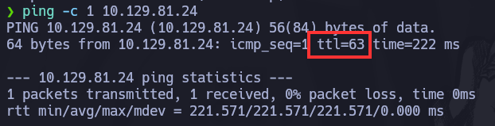

Network Maper (Nmap)

What is Nmap ?
Nmap is a free and open source network scanner that can be used to discover hosts on the local network or on the Internet. It can be used to find open ports, services, and versions running on the ports.
To get a comprehensive view of the target’s network structure and services, there are several flags that can be used to customize the scan like -p (to specify ports), -sV (to get service versions), -oA (to generate output), among others that will discuss later.
Nmap has it own script language that can be used to scan for vulnerabilities and misconfigurations. Those scripts are part of the Nmap Scripting Engine (NSE) and are distributed in different categories like auth, default, discovery, and exploit.
It is a great tool for enumerating the target’s network structure and services giving us a comprehensive view of the target. If it is well used can retrieve some useful information about the target.
Let’s jump into Nmap usage.
How to use Nmap ?
The most basic usage is: for this example i will be using a machine from the starting point of HTB.
The first thing to do is to ping the target machine.
❯ ping -c 1 10.129.81.24
PING 10.129.81.24 (10.129.81.24) 56(84) bytes of data.
64 bytes from 10.129.81.24: icmp_seq=1 ttl=63 time=236 ms
--- 10.129.81.24 ping statistics ---
1 packets transmitted, 1 received, 0% packet loss, time 0ms
rtt min/avg/max/mdev = 236.114/236.114/236.114/0.000 ms
The machine is up, so we can start our enumeration. Let’s use Nmap to scan the target machine.
The most basic scan is: (Un-privilege user)
❯ nmap 10.129.81.24
Starting Nmap 7.94SVN ( https://nmap.org ) at 2024-07-22 19:29 -03
Stats: 0:09:26 elapsed; 0 hosts completed (1 up), 1 undergoing SYN Stealth Scan
SYN Stealth Scan Timing: About 96.79% done; ETC: 19:39 (0:00:19 remaining)
Nmap scan report for 10.129.81.24
Host is up (0.30s latency).
Not shown: 999 closed tcp ports (reset)
PORT STATE SERVICE
23/tcp open telnet
Nmap done: 1 IP address (1 host up) scanned in 632.52 seconds
This scan may take a while as it does not have any options like -n (no dns resolution) or -Pn (treat all hosts as online) to make it faster. The scan will give us an overview of the target machine.
If for some reason the scan is taking too long and we want to see the progress of the scan we can use the -v flag (verbose mode) to show what nmap is doing in the background or while the scan is running we can press the space bar and it will also show the progress.
The report show us that only the port 23 is open and the service running on it is telnet. Also we can see that the target machine is up and running and 999 tcp ports are closed.
Important Flags we can use to improve scans
The first flag we need to learn is the -p flag. It is used to specify the ports we want to scan. In this example we want to scan only port 23. But we can also specify multiple ports like -p 23,80,443 or use -p- to scan all ports.
Nmap also has an option to scan default template ports, we can change it using the –top-ports option. It will scan the top 100 ports by default but we can specify the number we want to scan as –top-ports 2000.
Example:
❯ nmap --top-ports 2000 --min-rate 5000 -n -Pn -v 10.129.81.24
Starting Nmap 7.94SVN ( https://nmap.org ) at 2024-07-22 20:02 -03
Initiating Connect Scan at 20:02
Scanning 10.129.81.24 [2000 ports]
Increasing send delay for 10.129.81.24 from 0 to 5 due to 348 out of 1159 dropped probes since last increase.
Discovered open port 23/tcp on 10.129.81.24
Increasing send delay for 10.129.81.24 from 5 to 10 due to max_successful_tryno increase to 4
Increasing send delay for 10.129.81.24 from 10 to 20 due to max_successful_tryno increase to 5
Increasing send delay for 10.129.81.24 from 20 to 40 due to max_successful_tryno increase to 6
Completed Connect Scan at 20:02, 3.77s elapsed (2000 total ports)
Nmap scan report for 10.129.81.24
Host is up (0.25s latency).
Not shown: 1999 closed tcp ports (conn-refused)
PORT STATE SERVICE
23/tcp open telnet
Read data files from: /usr/bin/../share/nmap
Nmap done: 1 IP address (1 host up) scanned in 3.80 seconds
Another flag that is essential when scanning IP addresses is -n , which tells nmap not to perform a domain or DNS resolution. This is important because it takes too long when this flag is not set.
We can also use -Pn to tell nmap to treat all hosts as online. This is useful when we want to scan a range of IP addresses and we don’t want to resolve DNS too.
There is also the –min-rate option that allows us to specify the minimum number of packets that nmap will try to send per second. Its purpose is to maintain a minimum rate of packets transmitted during the scan.
Getting the operating system and service versions of the target machine
Once a first reconnaissance scan has been performed, we can find out much more information about the target, such as the operating system running on it and the versions of the services running on the open ports.
To find out the operating system Nmap offers us the -O flag which through some calculations made using the ttl (time to live) we could know which OS we are facing. Warning: To execute this flag you must use root privileges.
We can find out the same when we ping the IP address, we only have to pay attention to the ttl that we will see in the answer. If it is closer to the number 64 we are facing a Linux or Mac machine, on the other hand if it is closer to the number 128 we are facing a Windows machine.
Let’s perform a scan to port 23 using the -sV and -O flags
sudo nmap -p23 -sV -O -v 10.129.81.24
Starting Nmap 7.94SVN ( https://nmap.org ) at 2024-07-22 20:23 -03
PORT STATE SERVICE VERSION
23/tcp open telnet?
Warning: OSScan results may be unreliable because we could not find at least 1 open and 1 closed port
Aggressive OS guesses: Linux 5.4 (96%), Linux 3.1 (95%), Linux 3.2 (95%), AXIS 210A or 211 Network Camera (Linux 2.6.17) (95%), ASUS RT-N56U WAP (Linux 3.4) (93%), Linux 3.16 (93%), Linux 4.15 - 5.8 (93%), Linux 3.10 (93%), Linux 5.3 - 5.4 (93%), Linux 2.6.32 (92%)
No exact OS matches for host (test conditions non-ideal).
Uptime guess: 9.739 days (since Sat Jul 13 02:42:06 2024)
Network Distance: 2 hops
TCP Sequence Prediction: Difficulty=261 (Good luck!)
IP ID Sequence Generation: All zeros
Read data files from: /usr/bin/../share/nmap
OS and Service detection performed. Please report any incorrect results at https://nmap.org/submit/ .
Nmap done: 1 IP address (1 host up) scanned in 168.83 seconds
Raw packets sent: 51 (3.990KB) | Rcvd: 34 (2.820KB)
In this case it did not return the version of the service that is running, it is normal that this happens, likewise nmap could not hit 100% the operating system, which is why it is important to take into account the TTL.
Saving Nmap results to a file
Any tool is only as powerful as the output it delivers. Complex tests and algorithms are of little value if the output is not represented in an orderly and understandable way, that’s why Nmap offers to save the results in different formats including interactive mode that allows humans to directly read the output and XML for easy parsing by software.
Apart from this Nmap allows us to control the verbosity of the output as well as the debugging messages. This option uses the -o flag followed by the type of format in which you want to save. For example if you want to save in XML format it would be -oX, for a normal output it would be -oN, followed by the file name (it is always recommended to use names that describe well the output to save).
Output Flags format:
-
-oN < fileName.nmap > Requests that normal output be directed to the given filename
-
-oX < fileName.xml > Requests that XML output be directed to the given filename.
The XML output references an XSL stylesheet which can be used to format the results as HTML. The easiest way to use this is simply to load the XML output in a web browser such as Firefox or IE. By default, this will only work on the machine you ran Nmap on (or a similarly configured one) due to the hard-coded nmap.xsl filesystem path. Use the –webxml or –stylesheet options to create portable XML files that render as HTML on any web-connected machine.
- -oG < fileName.gnmap > Requests that Grepable output be directed to the given filename (is deprecated but still quite popular)
It is a simple format that lists each host on one line and can be trivially searched and parsed with standard Unix tools such as grep, awk, cut, sed, diff, and Perl. Even I usually use it for one-off tests done at the command line. Finding all the hosts with the SSH port open or that are running Solaris takes only a simple grep to identify the hosts, piped to an awk or cut command to print the desired fields.
Grepable output consists of comments (lines starting with a pound (#)) and target lines. A target line includes a combination of six labeled fields, separated by tabs and followed with a colon. The fields are Host, Ports, Protocols, Ignored State, OS, Seq Index, IP ID, and Status.
The most important of these fields is generally Ports, which gives details on each interesting port. It is a comma separated list of port entries. Each port entry represents one interesting port, and takes the form of seven slash (/) separated subfields. Those subfields are: Port number, State, Protocol, Owner, Service, SunRPC info, and Version info.
- -oA < fileName >
As a convenience, you may specify -oA < basename > to store scan results in normal, XML, and grepable formats at once. They are stored in < basename >.nmap, < basename >.xml, and < basename >.gnmap, respectively. As with most programs, you can prefix the filenames with a directory path, such as ~/nmaplogs/foocorp/ on Unix or c:\hacking\sco on Windows.
Verbosity and debugging options
- -v (increases verbosity), -v< level > (increases verbosity to < level >)>
Increases the verbosity level, causing Nmap to print more information about the scan in progress. Open ports are shown as they are found and completion time estimates are provided when Nmap thinks a scan will take more than a few minutes. Use it twice or more for even greater verbosity: -vv, or give a verbosity level directly, for example -v3.
This option is very useful because as the scan progresses and nmap is finding ports we can go to another terminal and perform scans to those ports among other things that are useful for the task we are working on.
- - -reason (Host and port state reasons)
Shows the reason each port is set to a specific state and the reason each host is up or down. This option displays the type of the packet that determined a port or hosts state. For example, A RST packet from a closed port or an echo reply from an alive host. The information Nmap can provide is determined by the type of scan or ping. The SYN scan and SYN ping (-sS and -PS) are very detailed, but the TCP connect scan (-sT) is limited by the implementation of the connect system call. This feature is automatically enabled by the debug option (-d) and the results are stored in XML log files even if this option is not specified.
- - -packet-trace (Trace packets and data sent and received)
Causes Nmap to print a summary of every packet sent or received. This is often used for debugging, but is also a valuable way for new users to understand exactly what Nmap is doing under the covers. To avoid printing thousands of lines, you may want to specify a limited number of ports to scan, such as -p20-30. If you only care about the goings on of the version detection subsystem, use –version-trace instead. If you only care about script tracing, specify –script-trace. With –packet-trace, you get all of the above.
- - -open (Shows only open (or possibly open) port)
Specify –open to only see hosts with at least one open, open|filtered, or unfiltered port, and only see ports in those states. These three states are treated just as they normally are, which means that open|filtered and unfiltered may be condensed into counts if there are an overwhelming number of them.
Beginning with Nmap 7.40, the –open option implies –defeat-rst-ratelimit, because that option only affects closed and filtered ports, which are hidden by –open.
Port Scanning Techniques
Learning the different scanning techniques that Nmap offers is like when you are at home trying to fix something and you are fighting for days because you have neither the knowledge nor the tools to finish the fix. Then you decide to take it to the next level and call in the expert, that’s when you realize that the professional pulls out a huge trunk full of tools and knows specifically which one to use for the task at hand.
That’s how Nmap scan types work, at first you try to solve everything with a SYN scan and that’s fine for beginners but as we grow as experts we realize that we require better tools and that only comes from having more knowledge.
Most of the scan types are only available to privileged users. This is because they send and receive raw packets, which requires root access on Unix systems. Using an administrator account on Windows is recommended, though Nmap sometimes works for unprivileged users on that platform when Npcap has already been loaded into the OS
While Nmap attempts to produce accurate results, keep in mind that all of its insights are based on packets returned by the target machines (or firewalls in front of them). Such hosts may be untrustworthy and send responses intended to confuse or mislead Nmap. Much more common are non-RFC-compliant hosts that do not respond as they should to Nmap probes. FIN, NULL, and Xmas scans are particularly susceptible to this problem. Such issues are specific to certain scan types and so are discussed in the individual scan type entries.
RFC-compliant code is code that follows the formal requirements for the protocols in the TCP/IP stack as specified in a number of RFC (“request for comments”) documents published by the Internet Engineering Task Force, aka the IETF.
This section documents the dozen or so port scan techniques supported by Nmap. Only one method may be used at a time, except that UDP scan (-sU) and any one of the SCTP scan types (-sY, -sZ) may be combined with any one of the TCP scan types. As a memory aid, port scan type options are of the form -s< C >, where < C > is a prominent character in the scan name, usually the first.
List of the most used port scan techniques
- - -sS (SYN scan)
- - -sT (TCP connect scan)
- - -sU (UDP scan)
- - -sA (ACK scan)
- - -sN (NULL scan)
- - -sF (FIN scan)
- - -sX (XMAS scan)
Most used port scan techniques with their descriptions
[ -sS (TCP SYN scan) ]
SYN scan is the default and most popular scan option for good reasons. It can be performed quickly, scanning thousands of ports per second on a fast network not hampered by restrictive firewalls. It is also relatively unobtrusive and stealthy since it never completes TCP connections. SYN scan works against any compliant TCP stack rather than depending on idiosyncrasies of specific platforms as Nmap’s FIN/NULL/Xmas, Maimon and idle scans do. It also allows clear, reliable differentiation between the open, closed, and filtered states.
This technique is often referred to as half-open scanning, because you don’t open a full TCP connection. You send a SYN packet, as if you are going to open a real connection and then wait for a response. A SYN/ACK indicates the port is listening (open), while a RST (reset) is indicative of a non-listener. If no response is received after several retransmissions, the port is marked as filtered. The port is also marked filtered if an ICMP unreachable error (type 3, code 0, 1, 2, 3, 9, 10, or 13) is received. The port is also considered open if a SYN packet (without the ACK flag) is received in response. This can be due to an extremely rare TCP feature known as a simultaneous open or split handshake connection.
[ -sT (TCP connect scan) ]
TCP connect scan is the default TCP scan type when SYN scan is not an option. This is the case when a user does not have raw packet privileges. Instead of writing raw packets as most other scan types do, Nmap asks the underlying operating system to establish a connection with the target machine and port by issuing the connect system call. This is the same high-level system call that web browsers, P2P clients, and most other network-enabled applications use to establish a connection.
When SYN scan is available, it is usually a better choice. Nmap has less control over the high level connect call than with raw packets, making it less efficient. The system call completes connections to open target ports rather than performing the half-open reset that SYN scan does. Not only does this take longer and require more packets to obtain the same information, but target machines are more likely to log the connection. A decent IDS will catch either, but most machines have no such alarm system. Many services on your average Unix system will add a note to syslog, and sometimes a cryptic error message, when Nmap connects and then closes the connection without sending data. Truly pathetic services crash when this happens, though that is uncommon. An administrator who sees a bunch of connection attempts in her logs from a single system should know that she has been connect scanned.
[ -sU (UDP scan) ]
While most popular services on the Internet run over the TCP protocol, UDP services are widely deployed. DNS, SNMP, and DHCP (registered ports 53, 161/162, and 67/68) are three of the most common. Because UDP scanning is generally slower and more difficult than TCP, some security auditors ignore these ports. This is a mistake, as exploitable UDP services are quite common and attackers certainly don’t ignore the whole protocol. Fortunately, Nmap can help inventory UDP ports.
UDP scan is activated with the -sU option. It can be combined with a TCP scan type such as SYN scan (-sS) to check both protocols during the same run.
UDP scan works by sending a UDP packet to every targeted port. For some common ports such as 53 and 161, a protocol-specific payload is sent to increase response rate, but for most ports the packet is empty unless the –data, –data-string, or –data-length options are specified. If an ICMP port unreachable error (type 3, code 3) is returned, the port is closed. Other ICMP unreachable errors (type 3, codes 0, 1, 2, 9, 10, or 13) mark the port as filtered. Occasionally, a service will respond with a UDP packet, proving that it is open. If no response is received after retransmissions, the port is classified as open|filtered. This means that the port could be open, or perhaps packet filters are blocking the communication. Version detection (-sV) can be used to help differentiate the truly open ports from the filtered ones.
[ -sA (TCP ACK scan) ]
This scan is different than the others discussed so far, it is used to map out firewall rule sets, determining whether they are stateful or not and which ports are filtered.
The ACK scan probe packet has only the ACK flag set (unless you use –scanflags). When scanning unfiltered systems, open and closed ports will both return a RST packet. Nmap then labels them as unfiltered, meaning that they are reachable by the ACK packet, but whether they are open or closed is undetermined. Ports that don’t respond, or send certain ICMP error messages back (type 3, code 0, 1, 2, 3, 9, 10, or 13), are labeled filtered.
[ -sN (NULL scan), -sF (FIN scan), -sX (XMAS scan) ]
These three scan types exploit a subtle loophole in the TCP RFC to differentiate between open and closed ports. Page 65 of RFC 793 says that “if the [ destination ] port state is CLOSED …. an incoming segment not containing a RST causes a RST to be sent in response.” Then the next page discusses packets sent to open ports without the SYN, RST, or ACK bits set, stating that: “you are unlikely to get here, but if you do, drop the segment, and return.”
When scanning systems compliant with this RFC text, any packet not containing SYN, RST, or ACK bits will result in a returned RST if the port is closed and no response at all if the port is open. As long as none of those three bits are included, any combination of the other three (FIN, PSH, and URG) are OK. Nmap exploits this with three scan types:
-
Null scan (-sN) Does not set any bits (TCP flag header is 0)
-
FIN scan (-sF) Sets just the TCP FIN bit.
-
Xmas scan (-sX) Sets the FIN, PSH, and URG flags, lighting the packet up like a Christmas tree.
The key advantage to these scan types is that they can sneak through certain non-stateful firewalls and packet filtering routers. Another advantage is that these scan types are a little more stealthy than even a SYN scan. Don’t count on this though—most modern IDS products can be configured to detect them. The big downside is that not all systems follow RFC 793 to the letter. A number of systems send RST responses to the probes regardless of whether the port is open or not. This causes all of the ports to be labeled closed. This scan does work against most Unix-based systems though. Another downside of these scans is that they can’t distinguish open ports from certain filtered ones, leaving you with the response open|filtered.
Nmap scripting engine
Nmap offers a variety of pre-configured ready-to-use scripts, these are divided into different categories and can be used by using the –script=< script-name > flag or by using -sC. Nmap sends the scripts considered to be the most secure and least intrusive, the abbreviation refers to –script=default.
Tip: you can join certain flags in the same line, for example -sV and -sC in -sCV . Not all of them can be put together in this way, e.g. -O.
Let’s now try to perform a basic script scan on the target IP and the port that is open
❯ sudo nmap -p23 -sVC 10.129.81.24
Starting Nmap 7.94SVN ( https://nmap.org ) at 2024-07-22 20:49 -03
Nmap scan report for 10.129.81.24
Host is up (0.89s latency).
PORT STATE SERVICE VERSION
23/tcp open telnet Linux telnetd
Service Info: OS: Linux; CPE: cpe:/o:linux:linux_kernel
Service detection performed. Please report any incorrect results at https://nmap.org/submit/ .
Nmap done: 1 IP address (1 host up) scanned in 37.94 seconds
As we can see by performing a service version scan (-sV) along with a basic script scan we were now able to obtain the service and its version. Also if we look well the result we can affirm that we are in front of a Linux machine!
The NSE is one of the most powerful features of Nmap, allowing usersto extend its functionality through Lua scripts.
Script categories:
- auth: Authentication
- broadcast: Network discovery via broadcast
- brute: Brute force
- default: Scripts executed by default
- discovery: Discovery of additional information
- dos: Denial of service vulnerability detection
- exploit: Exploitation of vulnerabilities
- external: Scripts that use external resources
- fuzzer: Fuzzing scripts
- intrusive: Scripts that can be considered intrusive
- malware: Malware detection
- safe: Scripts that are considered safe and non-intrusive
- version: Advanced version detection
- vuln: Detection of known vulnerabilities
In short, learning to use Nmap takes time and you may always learn something new as you encounter new challenges. The important thing to understand is that Nmap is used to scan networks and find ports and services running on them, at first it can be overwhelming the amount of flags that can be used to perform a scan, but remember that no one is born knowing and it is a matter of practice to become a master of ethical hacking.